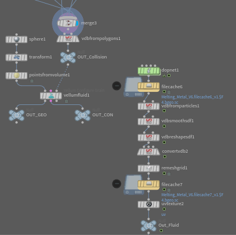

← 部落格 × Harbour
Bomin Kim（特效）


第 3 周
团队成员
1 月 21 日
Bomin Kim（特效）
Caleb Stovall（3D／2D）
Mojie Tang（特效）
Sydney Relkin（合成）
Yiqi Zheng（特效）
SCAD × HARBOR － 第 3 周
大家好，这是我 SCAD × Harbor 部落格的第三周！
导师回馈：
Vi：
-
颜色：冷色调
-
最后一个镜头？
Hailey：
-
参考：OK
-
最后一个镜头？
-
蓝色调：OK
Allie：
-
背景：确保前后一致
Billy：
-
传一个参考过来
-
Kyle：为什么要 1A／B／C？
-
不要拍到那个人的脸
-
不要拉远，专注在特写
-
镜头 4A：确保一致
-
最后一个镜头：不需要手
Olivia：
-
考虑转场／产品
-
最后一个镜头：不需要手
来宾 Yong Duk Jhun：
-
想想为什么有人会买这支手表
-
它会带给他们什么感受？
讨论后，我们决定把最后一个镜头从关上表壳改成打开表壳，象征欢迎顾客购买。我们也加入了从旋转齿轮到手表的转场。至于来宾 Yong Duk Jhun 的建议，经过仔细讨论并考量时程后，我们认为现阶段可能无法实现。
定稿预视：
熔融白金
之前：
我用 Vellum 产生粒子，再用 vdbfromparticlefluid 节点直接把粒子转成流体。但结果边缘看起来锯齿不平，模拟也跑得很慢。
修改后：
我改用另一种方法：VDB 转换加上 VDB 平滑，能更细致地控制流体表面的平滑度与细节。这个方法也能确保几何体干净细致，减少锯齿边缘或不规则的面。

烟雾：
烟雾：我也用 Pyro 在倒出熔融白金时加了一些烟雾，并依照法线属性选取表面，在 group 节点中调整方向。